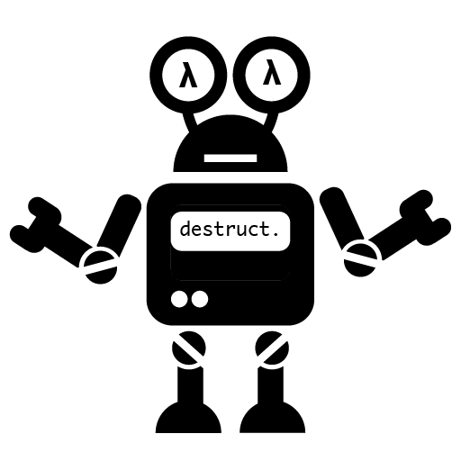

6 files processed
Commit: a2ad15d Converting from iso-8859-1 to utf8.
Run on 2020-11-27 16:35:12.566264
Proofs Completed: 5.62% (5/89)
- scrape_file: data/compcert-scrape.txt
- save_file: data/polyarg-weights.dat
- context_filter: (goal-args+((tactic:induction+tactic:destruct)%numeric-args)+hyp-args+rel-lemma-args)%maxargs:1%default
- truncate_semicolons: True
- use_substitutions: True
- normalize_numeric_args: True
- num_epochs: 20
- batch_size: 128
- print_every: 5
- learning_rate: 0.4
- epoch_step: 3
- hidden_size: 128
- num_layers: 3
- gamma: 0.8
- optimizer: SGD
- max_premises: 20
- num_keywords: 60
- tokenizer: no-fallback
- num_relevance_samples: 1000
- load_tokens: tokens.txt
- num_tactic_keywords: 50
- save_tactic_keywords: data/tactic-keywords.dat
- load_tactic_keywords: data/tactic-keywords.dat
- num_head_keywords: 100
- save_head_keywords: data/head-keywords.dat
- load_head_keywords: data/head-keywords.dat
- max_length: 30
- max_string_distance: 50
- max_beam_width: 10
- lemma_args: True
- hyp_features: True
- features: True
- hyp_rnn: True
- goal_rnn: True
- training loss: 2.5046338874686516
- # epochs: 20
- predictor: polyarg
- report type: search
- search width: 5
- search depth: 6
| point_angle.v | 31 | 6.45 | 12.90 | 80.65 | Details |
| point_napoleon.v | 21 | 4.76 | 42.86 | 52.38 | Details |
| point_cocyclicite.v | 16 | 6.25 | 12.50 | 81.25 | Details |
| point_tangente.v | 14 | 7.14 | 7.14 | 85.71 | Details |
| point_Simson.v | 5 | 0.00 | 0.00 | 100.00 | Details |
| point_orthocentre.v | 2 | 0.00 | 50.00 | 50.00 | Details |
| Total | 89 | 5.62 | 19.10 | 75.28 |
Trained as: ['./src/proverbot9001.py', 'train', 'polyarg', 'data/compcert-scrape.txt', 'data/polyarg-weights.dat', '--load-tokens=tokens.txt', '--context-filter=(goal-args+((tactic:induction+tactic:destruct)%numeric-args)+hyp-args+rel-lemma-args)%maxargs:1%default']
Reported as: ['/home/zoe/Desktop/proverbot9001/bench/../src/search_file.py', '-o', 'search-report-compcert', '-P', '--weightsfile=/home/zoe/Desktop/proverbot9001/bench/../data/polyarg-weights-compcert.dat', '-j4', './point_cocyclicite.v', './point_napoleon.v', './point_angle.v', './point_tangente.v', './point_orthocentre.v', './point_Simson.v']